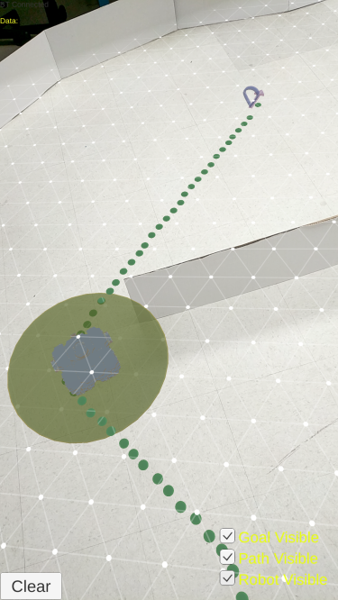

Abstract

Sharing the intention of a robot is essential to engender confidence in and guarantee safety of humans while they work in a robot co-located environment. It is a challenging task to share information about a robot’s intent and state, for example its planned motion, internal data, and sensory information, in a timely and comprehensible manner with users who may be engaged in other activities. Visual cueing offers an effective way to mediate intent and state communication between robots and humans and augmented reality (AR) provides a common canvas to share visual cues in a realworld environment. In this work, we present a mobile AR application to display navigation information of a mobile robot. We explored the potential of exhibiting motion intent of a mobile robot using AR visualization and examined how it improves the situational awareness (SA) of users. Our empirical studies illustrate that AR visualization is effective and beneficial for humans to better understand the actions of robots and hence improve their SA in a working environment where robots and humans coexis.
Go to Home page
Home